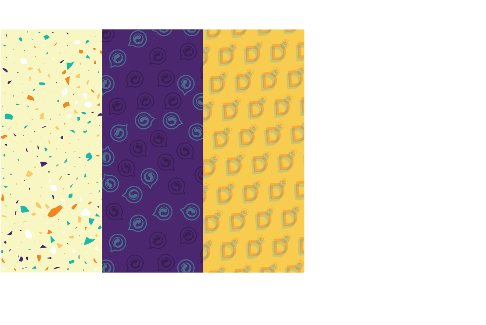
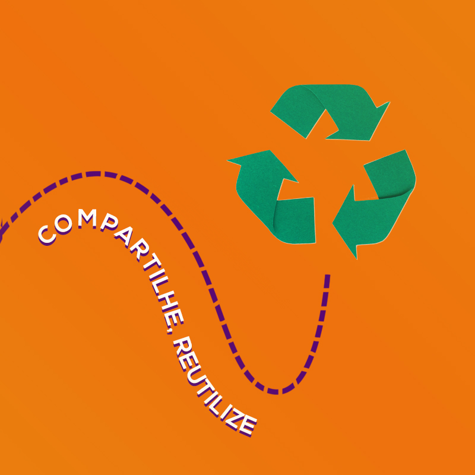

Olá! Seja Bem vindo ao Manual de Marca da Descartes!
Assista nosso video e entenda como a gente funciona você só precisa de um minutinho!
Descartes consiste em um Website que dispõe de geolocalização. A plataforma atua como intermediador entre empresas e indivíduos interessados em obter resíduos sólidos por meio de cadastro e manutenção do respectivo perfil no site.
Este manual de marca auxilia o uso da marca Descartes nas mais diversas maneiras, apresentando todos os elementos que compõe o seu sistema de identidade visual. Dessa maneira é necessário garantir o uso correto e a padronização da marca.
"Ligando pessoas, construindo possibilidades!"
Através de estudos na área e análise de cada usuário, a plataforma Descartes visa uma navegação rápida em um sistema objetivo. Esse sistema tem como propósito o incentivo à conscientização ambiental e contribuição com a comunidade, além de praticidade e objetividade na hora do acesso.
Fazer uma rede de colaboração entre empresas e comunidade, onde os resíduos descartados possam se tornar material para trabalhos manuais e artesanais na comunidade.
O D da nossa logomarca trás 2 cores quentes, representando dinamismo, atividade constante e criatividade, junto com o verde turquesa referindo-se ao crescimento e sustentabilidade. As formas circulares de transição entre cores transmitem a ideia dos ciclos de reutilização dos resíduos sólidos, assim como o ícone dentro do pin de localização. O resto da tipografia apresenta leveza nas formas e seriedade com o violeta.
O grid de construção garante a distribuição hamonica dos elementos constituintes da logo. O módulo X estabelece as proporções na malha construtiva.
A área de respiro atua como área delimitadora, definindo um espaço onde não deve haver interferência entre a marca ou quaisquer outros elementos visuais. A distância mínima deve respeitada e abaixo pode conferir a delimitação representada pela letra S da logo Descartes.
Para mater a legibilidade e leiturabilidade da logo Descartes, se fez necessária uma medição mínima para a aplicação da logo nos mais variados materiais e plataformas.
A redução máxima em meios digitais é de 85 px.
Nesta seção encontra-se aplicações da marca Descartes em alguns materiais, tais como: papelaria, canecas e vestuário. Cada material faz uso da marca de acordo com as diretrizes básicas estabelecidas neste manual.
>Nesta seção encontra-se os diversos elementos visuais que compõe a marca Descartes. Dessa forma a identificação da marca é feita através da percepção do conjuto de elementos que aqui são apresentados. Tipografia, paleta de cores, etc, são desenvolvidos e selecionados a fim de transmitir nosso serviço e objetivos para com os usuários e para a sociedade.
>A tipografia principal, na qual compõe a marca Descartes, é a Nexa Bold. É uma fonte que traduz positivivamente a mensagem ao qual queremos que seja transmitida aos nossos usuários. Com um design simples, porém arrojado, além de transmitir modernidade e personalidade.
As demais fontes, secudárias, são a Nunito Sans para títulos e subtítulos e a Helvetica para textos corridos. Ambas as tipos possuem ótima leiturabilidade, transmitindo sensação de conforto e fluidez.
A paleta de cores da marca Descartes utiliza-se de tons quentes e frios, onde estas cores se complementam ao aplicá-las nas demais plataformas. Os tons quentes remetem ao dinamismo, a criatividade, dessa forma transmite os valores sobre a construção e o desenvolvimento de uma ideia, além do sentimento revigorante inserido a esta visão.
Os tons frios remetem a leveza, utilizando de tons mais joviais, porém há a importância de dar ênfase a seriedade inserida ao serviço. O verde utilizado é mais chapado, fazendo o desuso de tons verdes que logo remete a questões ambientais. Apesar da temática inserida sobre reutilização, o uso do verde, neste caso, não se prende somente aos valores relacionados ao meio ambiente. O uso de tal cor vem também da necessidade de se transmitir crescimento, assim viabilizando outros métodos para a construção de uma sociedade ativamente sustentável.
As texturas fazem parte dos elementos visuais da marca e tem como objetivo auxiliar na composição de peças de cunho institucional ou promocional, de modo a obter o reconhecimento da mesma e poder aplicá-la de diversas forma.
As fotos utilizadas na campanha da marca Descartes são desenvolvidas misturando o real e o lúdico, com o uso de texturas e algumas ilustrações através de edições. Dessa forma nos comunicamos com os nossos usuários de maneira dinêmica e divertida, sempre mantendo os elementos da marca e utilizando imagens que refere-se às prospostas de conscientização e reutilização de resíduos sólidos.
